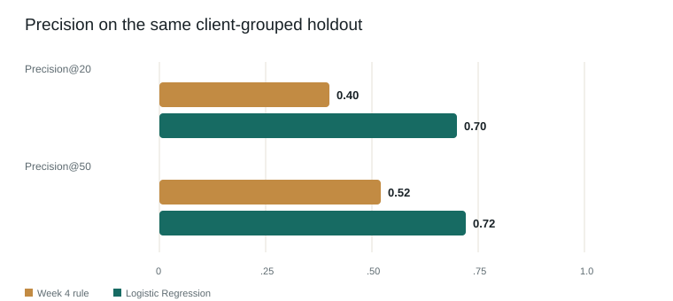
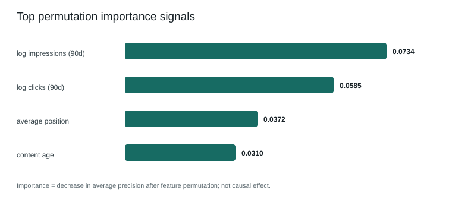
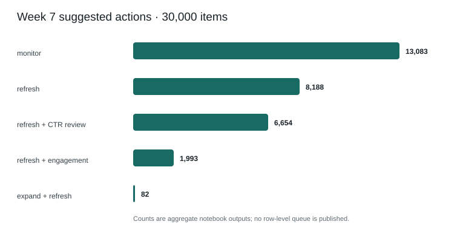

At a glance
The decision is what to review first
FlyRank helps teams research, publish, monitor, and optimize website content. As pages accumulate, search visibility can quietly weaken; the practical product question is which page should a person investigate first across a large portfolio.
FlyRank already uses hand-written health scores, quick-win tags, and needs-attention flags to surface pages. Those rules are useful operational starting points, but fixed thresholds can struggle when age, visibility, engagement, and content attributes interact. This capstone studies that gap: can a learned ranker improve the ordering of a review queue over a transparent age-and-visibility rule, using the anonymized internship sample as a case study?
The unit is one content item, and the intended decision is whether an editor or SEO specialist should inspect it sooner, investigate it, monitor it, or take no action. Existing product flags are treated as the rule-based context to beat, not as model inputs, to avoid learning a prior decision. The target is a historical impression-decline label—not a Google ranking label, a future-traffic forecast, or a causal estimate of refresh impact. The result is decision support for human review, not an automated publishing instruction.
What was actually analyzed
The model and action-playbook results shown here use the anonymized starter CSV in this repository: data/raw/content_refresh_anonymized.csv. The file contains 30,000 rows and 44 source columns, with one row per pseudonymized content item across 32 pseudonymized clients. The prepared feature vector has 52 columns after the repository's preparation step.
| Source | content_refresh_anonymized.csv (starter sample) |
|---|---|
| Grain | One row per content item |
| Coverage | 30,000 rows · 44 source columns · 32 client groups |
| Activity window | Trailing 90-day aggregates; trend compares the latest 30 days with the preceding 30 days |
| Derived target | is_declining_label = 1 when trend_direction == "down"; all other trend categories are grouped as 0 |
The repository separately documents a gated warehouse release with 78,835,655 daily performance rows, 519,606 content records, and query-level data. Those warehouse tables were not queried to produce the metrics in this paper. I do not present the starter-sample results as a 79-million-row analysis. The local CSV's export timestamp is not recorded in the data dictionary, so no exact calendar end date is asserted here.
Identifiers content_id and client_id were retained only for joins, grouping, and validation, and excluded from model features. The label-source columns trend_direction and trend_pct were also excluded. No client names, domains, URLs, page titles, keywords, or raw search queries are included in this public analysis. The pipeline's feature lists also exclude provider/model metadata.
Important data semantics: rates such as CTR are stored on a 0–100 percentage scale; avg_position = 0 means position data is unavailable; missing keyword/content fields are systematic by content type rather than necessarily random.
A grouped holdout and a transparent comparison
Label and features
The binary target is trend_direction == "down". The repository's trend definition marks down when the latest 30-day impressions are more than 20% below the preceding 30 days; new, flat, up, and stable categories are grouped into the non-declining class. The target prevalence in the full sample is 54.21%.
The Logistic Regression pipeline uses 26 repository-defined features: 18 numeric and 8 categorical. Numeric features include content age, days since update, search/engagement measures, and log-transformed activity totals; categorical features include content type, intent, and tier variables. Numeric values are median-imputed and scaled; categorical values are mode-imputed and one-hot encoded. The pipeline uses class weighting and a fixed random seed of 42.
Validation design
Week 5 uses GroupShuffleSplit with an 80/20 split grouped by client_id and random state 42. Training contains 23,837 rows from 25 clients; test contains 6,163 rows from 7 different clients. The train/test client overlap is zero. The test-set decline-label rate is 51.1%.
Baseline
The Week 4 baseline is a simple two-signal rule: assign one point for content age of at least 180 days and one point for at least 500 impressions in the trailing 90 days. Both the baseline and Logistic Regression rank the same held-out test items. Metrics are Precision@20, Precision@50, and average precision.
Leakage checks
Direct label-derived columns and both identifiers are absent from the model feature list, and the client-grouped split prevents the same client from appearing in train and test. However, the 90-day activity features may overlap the 30-day windows used to construct the historical decline label. The available snapshot does not provide a separate feature-availability timestamp that proves these signals predate the label window. Temporal leakage is therefore unresolved; the experiment is retrospective discrimination, not a verified future prediction.
Model ranking outperformed the simple rule on this holdout
On the same 6,163 test rows, Logistic Regression placed a higher share of declining-label items near the top of the review list than the Week 4 baseline. The test-set prevalence was 51.1%, shown as context rather than a substitute for a ranking baseline.

| Method | Precision@20 | Precision@50 | Average precision |
|---|---|---|---|
| Week 4 age + visibility rule | 0.400 | 0.520 | 0.4980 |
| Logistic Regression | 0.700 | 0.720 | 0.6044 |
Week 6 adds a five-fold GroupKFold out-of-fold sensitivity check for the Logistic Regression model: average precision 0.6678, Precision@20 0.75, and Precision@50 0.74 across 30,000 out-of-fold predictions. This is a different evaluation procedure from the single Week 5 holdout, so it is reported as a validation sensitivity result, not as a direct baseline comparison or evidence of model improvement.

The leading signals were log impressions (0.0734), log clicks (0.0585), average position (0.0372), and content age (0.0310). False positives included visible older pages and newer pages with lower traffic; false negatives included very low-impression pages. The model can therefore over-prioritize visible pages and miss declines where little traffic is available.
What these results do not establish
- Not a 79M-row result. The reported experiment uses the 30k-row starter CSV, not the separate gated warehouse.
- Retrospective label. The target is derived from historical impression movement; it does not directly measure future rankings, business value, or refresh success.
- Temporal overlap risk. Some 90-day predictors may overlap the target's comparison window. A time-aligned feature/label design is needed before prospective use.
- Limited generalization. There are 32 client groups in this sample and only 7 held out in the single holdout. New clients, seasons, and search environments may differ.
- Observational data. No controlled intervention or matched causal design was run. A refresh cannot be said to cause recovery from these results.
- Ranking metrics have sampling noise. Precision@20 is based on only 20 items; report it alongside Precision@50, average precision, and the test base rate.
- Action queue confidence is not calibration. Confidence tiers are operational thresholds, not calibrated probabilities that an action will succeed.
Turn the score into a review queue, not an autopilot
The Week 7 playbook used the pipeline-selected Random Forest probabilities and the normalized baseline score. Its final score is 100 × (0.70 × model probability + 0.30 × normalized baseline). It is a relative review-priority score, not the probability that a refresh will work.

| Rank | Suggested action | Items | Human next step |
|---|---|---|---|
| 1 | monitor | 13,083 | Keep under observation; do not force an edit. |
| 2 | refresh | 8,188 | Diagnose the decline and verify freshness before editing. |
| 3 | refresh_and_review_ctr | 6,654 | Review search intent, title/snippet fit, position, and CTR. |
| 4 | refresh_and_review_engagement | 1,993 | Review usefulness, content structure, and page experience. |
| 5 | expand_and_refresh | 82 | Check whether important user needs are missing before expanding. |
The queue contains 30,000 unique content items. Its confidence labels were 3,602 high, 11,398 medium, and 15,000 low; low-confidence items are flagged for additional investigation. Every item still requires human approval.
Human review checklist
- Confirm the page is live, relevant, and still serves a real user need.
- Verify reason codes against source metrics; inspect impressions, clicks, sessions, CTR, and position.
- Check intent, factual accuracy, content quality, seasonality, tracking changes, and cannibalization.
- Estimate effort and potential value; record refresh, investigate, monitor, or no-action.
No-go list
No automatic publishing, rewriting, deletion, URL changes, redirects, canonical/schema/metadata edits, or sensitive editorial decisions. The model must not override an editor, subject-matter expert, or client approval.
Monitoring and retraining
Monitor duplicate IDs, missing scores, feature availability, score distributions, client/content mix, reviewer acceptance and rejection, and later outcomes. Investigate schema changes, missingness shifts, score-distribution changes, or repeated low-value top-ranked recommendations. Retrain only after checking label consistency and feature timing, collecting enough new labels, and passing a fresh grouped or time-aware validation; a traffic change alone is not a retraining trigger.
Inspect the work and rerun the pipeline
The repository contains the analysis notebooks, source scripts, data dictionary, and environment requirements. The Week 5 notebook documents the same-split Logistic Regression comparison; Week 6 documents grouped out-of-fold validation and the leakage audit; Week 7 documents the ranked action playbook and human-review policy.
- Repository
- Week 5 — model and baseline comparison
- Week 6 — validation and leakage audit
- Week 7 — action playbook
- Capstone notebook
- Feature definitions · Baseline script · Training script
For the reference pipeline, install the pinned project dependencies and run from a fresh clone:
pip install -r requirements.txt python scripts/run_all.py
For the Week 5 comparison, open and run work/notebooks/w05_model.ipynb top to bottom. It uses random state 42, the repository's feature lists, and a client-grouped 80/20 holdout. The capstone notebook in this repository assembles the same evidence and generates the paper figures.
The historical metrics in this paper are transcribed from the committed Week 5–7 notebook outputs. The Week 7 row-level queue is intentionally not published; only aggregate counts and policy summaries are shown.
Data credit
Built on the FlyRank ML Internship dataset. The starter sample is anonymized and supplied for educational analysis; the repository's data-use rules govern its handling and public presentation.